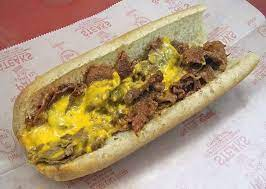

Philly Cheesesteak
Servings: 2 large sandwiches
Calories: 381/sandwich
Prep Time: 20 mins

Ingredients
- 2 eight inch hoagie rolls, sliced
- 2 tablespoons unsalted butter
- 1/2 green bell pepper, sliced
- 1/2 onion, sliced
- 4 button mushrooms, sliced
- 16 ounces boneless ribeye steaks, sliced thinly
- 2 teaspoons worcestershire sauce
- 4 slices white American cheese
Instructions
- Butter insides of hoagie rolls with 1 tablespoon of butter and toast. This is optional.
- In a saute pan over medium heat, heat up another tablespoon of butter. Once melted and bubbling, add the bell pepper, onion, and the mushrooms. Cook until the veggies have lightly browned and the onions are translucent. Remove these from the skillet and set aside.
- Before cooking your ribeye steaks, season with salt, pepper, or any of your favourite seasonings to your taste. Add another tablespoon of butter to the skillet and let it melt and bubble. Add the sliced steaks and cook for 2-4 minutes, stirring occasionally. Add the worcestershire sauce to the steaks and stir to combine.
- Reduce the heat to low and return the veggies to the skillet. Stir to combine. Divide the mixture in two on both sides of the skillet. Lay two slices of cheese onto each half and allow a minute or two to let it melt nicely.
- Divide the mixture evenly amongst the two hoagie rolls and serve immediately.